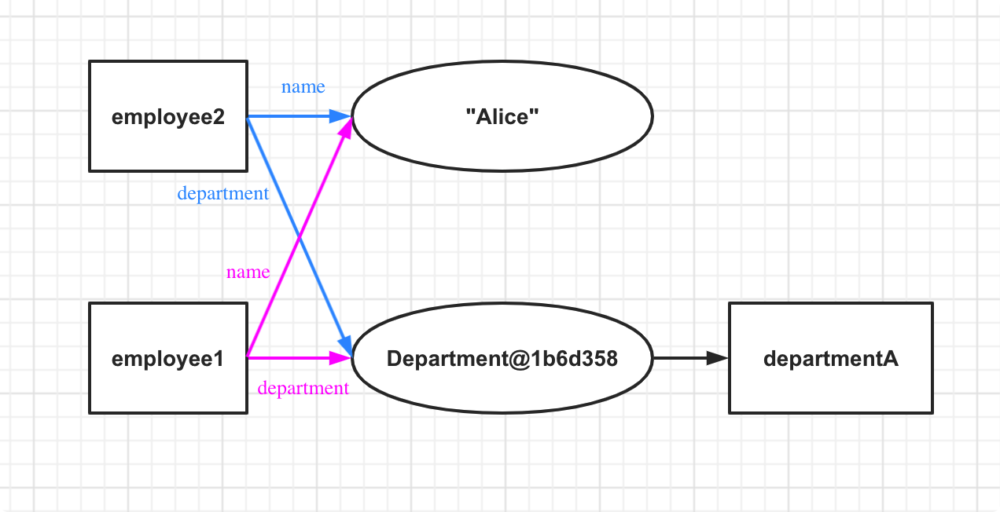
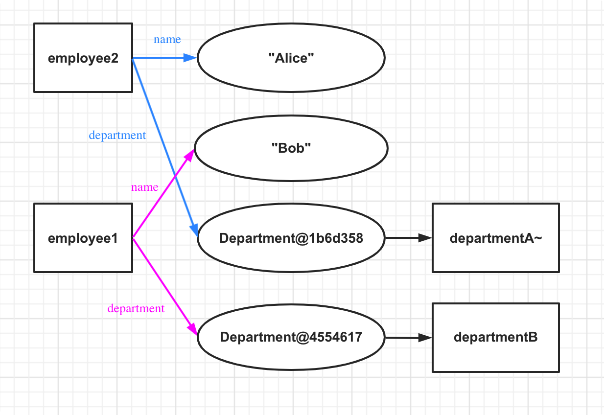

有时候我们需要创建一个对象的复制品，这个复制品和原来的对象拥有相同的类型、相同的属性。这个过程就是对象的拷贝。
Java 中有三种类型的拷贝：浅拷贝(Shallow Copy)，深拷贝(Deep Copy)，延迟拷贝(Lazy Copy)。
浅拷贝
浅拷贝在复制属性时，有这样两种情况：
- 如果属性是基本类型，拷贝的是基本类型的值
- 如果属性是引用类型，拷贝的是引用对象的内存地址
看一个例子吧，这样会更加清晰：
package me.jeff;
class Department {
private String name;
public Department(String name) {
this.name = name;
}
public String getName() {
return name;
}
public void setName(String name) {
this.name = name;
}
}
public class Employee implements Cloneable {
private String name;
private Department department;
public Employee(String name, Department department) {
this.name = name;
this.department = department;
}
public String getName() {
return name;
}
public void setName(String name) {
this.name = name;
}
public Department getDepartment() {
return department;
}
public void setDepartment(Department department) {
this.department = department;
}
@Override
public Object clone() throws CloneNotSupportedException {
return super.clone();
}
public static void main(String[] args) throws CloneNotSupportedException {
Department departmentA = new Department("DepartmentA");
Department departmentB = new Department("DepartmentB");
Employee employee1 = new Employee("Alice", departmentA);
Employee employee2 = (Employee) employee1.clone();
System.out.printf("employee1: name: %s, department: %s, %s\n", employee1.getName(), employee1.getDepartment(), employee1.getDepartment().getName());
System.out.printf("employee2: name: %s, department: %s, %s\n", employee2.getName(), employee2.getDepartment(), employee1.getDepartment().getName()); // <1>
System.out.println("employee1 == employee2: " + (employee1 == employee2));
System.out.println("employee1.name == employee2.name: " + (employee1.getName() == employee2.getName()));
System.out.println("employee1.department == employee2.department: " + (employee1.getDepartment() == employee2.getDepartment()));
employee1.getDepartment().setName("DepartmentA~");
System.out.printf("employee1: name: %s, department: %s, %s\n", employee1.getName(), employee1.getDepartment(), employee1.getDepartment().getName());
System.out.printf("employee2: name: %s, department: %s, %s\n", employee2.getName(), employee2.getDepartment(), employee1.getDepartment().getName()); // <2>
System.out.println("employee1.department == employee2.department: " + (employee1.getDepartment() == employee2.getDepartment()));
employee1.setName("Bob");
employee1.setDepartment(departmentB);
System.out.printf("employee1: name: %s, department: %s, %s\n", employee1.getName(), employee1.getDepartment(), employee1.getDepartment().getName());
System.out.printf("employee2: name: %s, department: %s, %s\n", employee2.getName(), employee2.getDepartment(), employee2.getDepartment().getName()); // <3>
System.out.println("employee1 == employee2: " + (employee1 == employee2));
System.out.println("employee1.name == employee2.name: " + (employee1.getName() == employee2.getName()));
System.out.println("employee1.department == employee2.department: " + (employee1.getDepartment() == employee2.getDepartment()));
}
}
输出为：
1) employee1: name: Alice, department: me.jeff.Department@1b6d3586, DepartmentA
2) employee2: name: Alice, department: me.jeff.Department@1b6d3586, DepartmentA
3) employee1 == employee2: false
4) employee1.name == employee2.name: true
5) employee1.department == employee2.department: true
6) employee1: name: Alice, department: me.jeff.Department@1b6d3586, DepartmentA~
7) employee2: name: Alice, department: me.jeff.Department@1b6d3586, DepartmentA~
8) employee1.department == employee2.department: true
9) employee1: name: Bob, department: me.jeff.Department@4554617c, DepartmentB
10) employee2: name: Alice, department: me.jeff.Department@1b6d3586, DepartmentA~
11) employee1 == employee2: false
12) employee1.name == employee2.name: false
13) employee1.department == employee2.department: false
我们来分析一下。Employee 类实现了 Cloneable 接口，他有两个属性：name 和 department。其中 name 是字符串类型，是以一个不可变的值存储在内存中；从 <1> 的输出中可以看到，department 存储的是一个内存地址，这个内存地址指向了一个实例化的 Department 对象。
Employee 类实现的 clone() 方法中只是调用了 super.clone()，即 Object.clone()。
从输出的第 3 行可以看出，employee2 作为 employee1 的复制品，是存储在内存中另一块区域里的一个实例化对象。从输出的第 4 行和第 5 行看出，employee2 和 employee1 的 name 属性是同一个值，department 属性是同一个内存区域：

从 <2> 的输出看出，employee1 修改了 department 属性指向的对象的 name 属性，这并没有修改这个内存地址，所以输出的第 6, 7, 8 行显示了 employee1 和 employee2 的 department 属性仍是相同的。也就是说，某个对象有一个属性是引用类型，对这个对象浅拷贝后得到了他的复制品，那么在这个属性上所做的修改，不论是在原本对象还是复制品中，都会对另一方产生影响。
之后，我们给 employee1 设置了新的 name 和 department 属性，此时他的 name 属性是内存中存储的另一个字符串常量，department 属性是另一个实例化的 Department 对象的内存地址：

可以看出，此时 employee1 和 employee2 已经没有任何相同之处。
深拷贝
深拷贝其实就是对于引用类型的属性做拷贝时，创建一个新的对象，而非复制内存地址。
我们只需修改 clone() 方法，让他对这个引用类型的属性创建一个新对象即可：
// 其余代码不变，这里省略
@Override
public Object clone() {
Department department = new Department(getDepartment().getName);
return new Employee(name, department);
}
看一下输出：
1) employee1: name: Alice, department: me.jeff.Department@1b6d3586, DepartmentA
2) employee2: name: Alice, department: me.jeff.Department@4554617c, DepartmentA
这里只显示了输出的前两行，通过这两行已经可以看出，employee1 和 employee2 的 department 属性存储的内存地址指向的是两个不同的 Department 实例化对象。
由于需要对对象的所有引用类型属性都要去实例化对应的对象，所以深拷贝的执行速度和开销比浅拷贝要大。
序列化拷贝也是深拷贝的一种，他会将一个可序列化（实现 Serializable 接口）对象写入到一个持久化文件中，在拷贝时再读取出来，创建新的对象。当然，对于对象中的引用类型，也会去创建新的对象。
延迟拷贝
延迟拷贝其实是深拷贝和浅拷贝的结合。它是这样工作的：拷贝一个对象时，会使用速度较快的浅拷贝，并且用一个计数器来记录有多少个对象共享每个属性。当修改属性时，通过检查计数器来决定是否需要深拷贝。延迟拷贝利用了浅拷贝的速度，并在必要时进行深拷贝。但是计数器会存在一些问题，比如效率会下降，会有循环引用的问题。
还有需要注意的是，数组、集合中的拷贝默认都是浅拷贝。